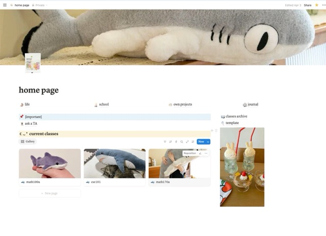

Notion and Obsidian are the two primary note-taking apps I've used, each with many pros and cons. Though they both share a structure that encourages page linking as a method of organizing pages, Notion is geared more towards collaboration and is more beginner-friendly, while Obsidian offers greater control and is best for those seeking something with more features.
The primary features in Notion that I found to be far better than in Obsidian were the ability to sync databases across different pages and the ability to collaborate with others and publish websites easily. It's also easier to sync Notion pages for free as all of it can be accessed through browser.
However, Notion lacks customizable shortcuts, and certain functions like taking notes in LaTeX and using the app offline are clunky at best.

It was taking in notes in LaTeX that was the final straw that drove me to finally, properly try out Obsidian. I had tried Obsidian a long time ago, but soon gave up trying to get my homepage to look the way I wanted.
This time, I spent the extra effort to make my homepage as cute as possible with adorable characters and a custom theme. I guess I really was just allergic to a bland homepage because as soon as I got the page theme the way I wanted it, I've been obsessed with Obsidian ever since.
While I do miss being able to sync databases across my pages and being able to easily public my pages to the internet, Obsidian's impact on my primary use for it, note-taking, made it 100% worth it for me. Even while I do pay almost 50 USD a year to sync my pages across my devices.
I now have two separate LaTeX addons for all the shortcuts I could ever need, and being able to use normal markdown in Obsidian rather than a restricted version in Notion has been such a lifesaver for quickly bashing down notes.
Is Obsidian really better than Notion, though? Honestly, I don't have a definite answer. However, what I can say is that if you're a Notion user, I highly reccommend trying out Obsidian. Once you get past the setup, it's a whole lot of fun. It's just lacking the cute Notion-like templates to get started.
If you're an Obsidian user looking to try Notion, it's great for having online syncing completely free and built in and having easier collaboration online. Maybe if you're fine with using just Notion's format, you might just save 50 dollars a year on syncing services!
Either way, I hope you have fun trying out these note-taking softwares. I sure did!